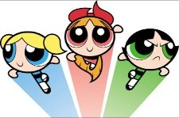

Want to play a little game? Let's have some fun.
Think about that You or Part of You that’s imperfect, not good, not enough.
Maybe it’s unlovable or a loser or unkind or irresponsible.
However you might characterize your less-than-ideal self, just pick one for now.
Now close your eyes, and take a look.
In your minds eye, summon it up and actually look at it.
What does Bad You look like?
OMG, you can actually see it.
Turns out everyone has some visual of this Bad-Me thing, though sometimes it takes a little practice to notice.
For many folks, it’s a cartoon- The Incredible Hulk, Lucy from Peanuts, the Tasmanian Devil.
Or it might be just a body part- a snarling mouth, clenched fists, tears on a cheek.
Or perhaps it’s an old photograph or movie, seemingly of a real person, such as a parent or spouse.
Whatever it is, notice it’s an image.
Certainly not an actual thing, not a real person.
It's not even an actual photo.
It’s a mental representation. A stand-in. A characterization.
Of the You that’s bad. Of the You that’s not enlightened and missing out. Of the You that’s unmotivated, selfish, unloved, a failure.
You can even put your hand through it and wriggle your fingers on the other side.
That’s how flimsy it is.
That's not You.
That's a wispy bit of mental pixel.
That thing can’t hurt anyone, or be alone, or make mistakes.
That thing can’t do anything.
See, because, it’s not real. It's just lines, shapes and colors, happening in the mind.
Wherever and whatever the hell that is.
And yet that picture is a good part of what is summoned up as proof of your bad, not-good-enough self.
As if a mental cartoon can make itself real, or prove anything, simply by repetition and insistence.
And then based on said picture, a narrating thought intones, “See? You're bad, obnoxious, damaged.”
The moving picture has a sound track. The cartoon comes with a thought-bubble commentary.
Which naturally you believe.
Because that's easy to do, when you don’t notice that what’s speaking is a wispy no-thing...
Commenting about another no-thing.
And the narrator certainly sounds like it knows what it's talking about.
Even though there's no proof of that either, except for additional mental movies.
Now I’m not saying don’t listen to the thoughts or the sound track.
Though I don’t know why you’d want to; that’s never a happy-making experience.
And I'm not saying try to make the picture go away, though that can be interesting to play with.
I’m just saying maybe you might observe the process.
Beginning with how much dissatisfaction and unhappiness with yourself starts with these images of Not-Enough-You.
Because there is no requirement to let some mental cartoon dictate one’s contentment with life.
And then?
Well, maybe you'll have some fun finding out.
Because really, who doesn't like cartoons or the movies? Once you see how much nothing all that sound and imagery is...
It can be darned entertaining when the Powerpuff Girls or Daffy Duck or some not-real-picture of your mother isn't running your life.
How enjoyable might it be to not let some imagined picture of self...
Some description...
Some impersonation...
Define what you are or aren't.
Because Pow! Bam! Thufferin’ Thuccotash!
After a while,
That can start to seem almost…
Comic-al.
Click here to get your every week.
"Reality is only a Rorschach ink blot." --Alan Watts
